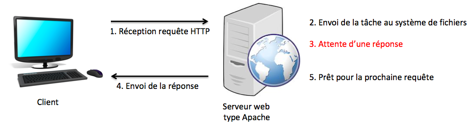
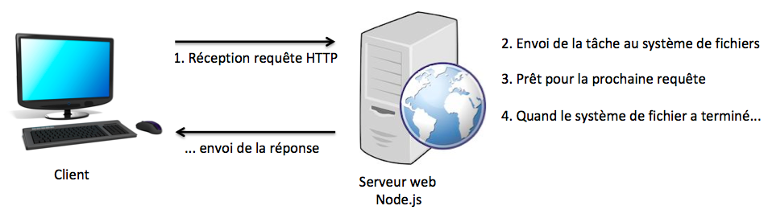
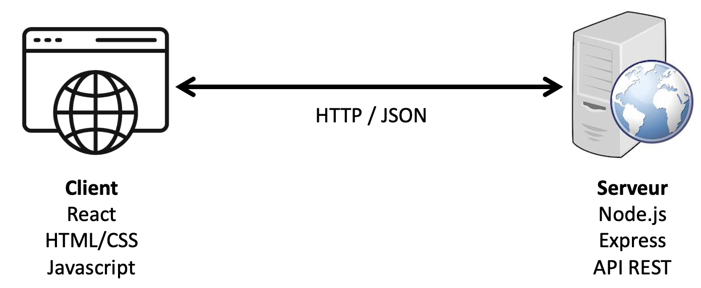
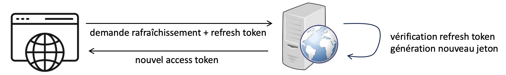
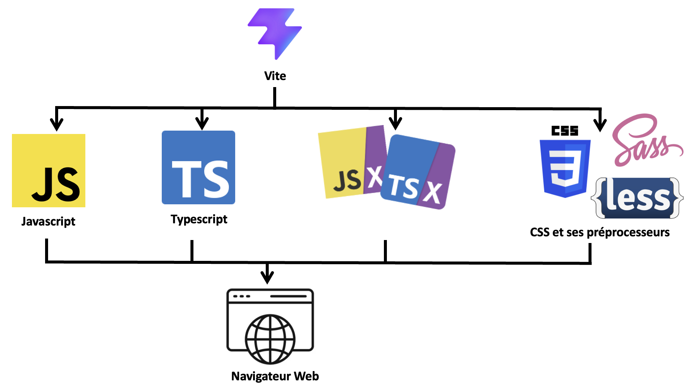
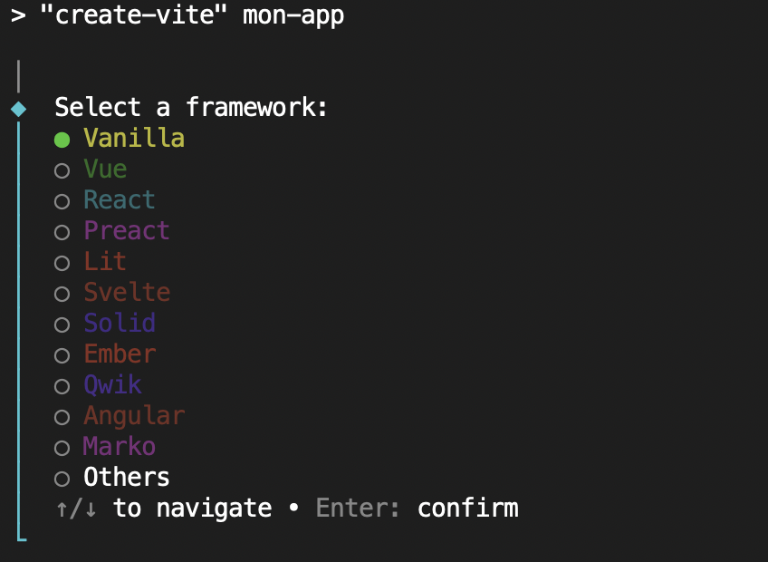
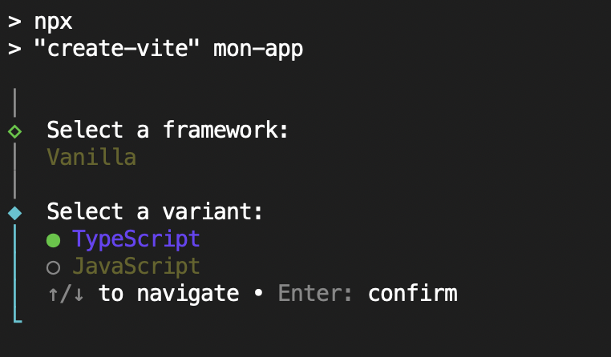
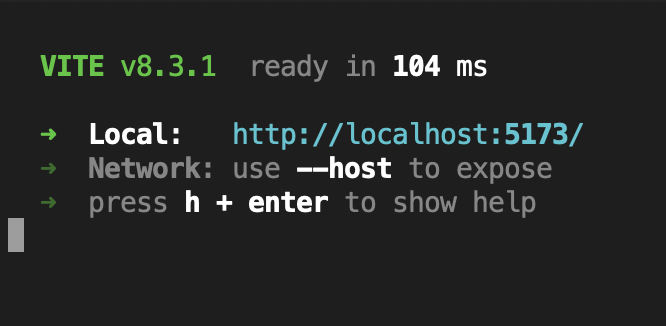
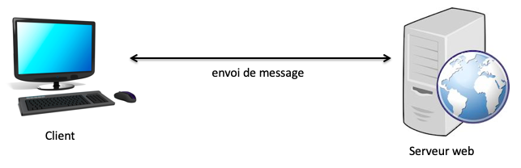
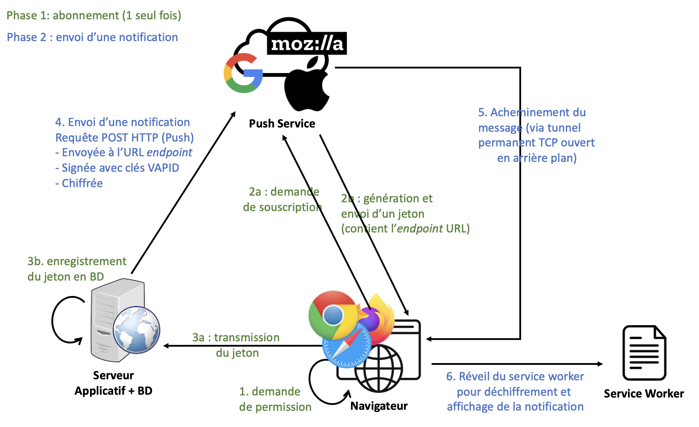

Projet fondé en Janvier 2009 par Kevin Dangoor, CommonJS (initialement nommé ServerJS) a pour objectif de spécifier un écosystème pour Javascript en dehors du navigateur.
Node.js a été écrit par Ryan Dahl en 2009 dans le cadre du projet CommonJS. Volonté initiale : remplacer Apache que Dahl trouvait trop lent. Initialement Node.js s'appuyait :
L'architecture de Node.js est non-bloquante ce qui accélère considérablement les traitements.
Node.js est désormais un environnement open-source côté serveur, gratuit, performant, qui s'exécute sur de nombreuses plateformes et qui utilise Javascript.
Node.js peut être utilisé comme environnement d'exécution de scripts à part entière (à l'instar de Python, Ruby, etc.) mais son usage principal reste le web, offrant la possibilité de définir et paramétrer un serveur web complet.
Sans Node.js

Avec Node.js

Node.js s'exécute en mono-thread, non-bloquante, avec de la programmation asynchrone → très efficace.
Node.js peut effectuer les traitements suivants :
Node.js fonctionne avec un interpréteur installé sur un serveur (téléchargeable sur
Les fichiers .js exécutés (également appelé "initiés") avec cet environnement contiennent
des scripts qui seront exécutées à l'aide de la commande :
$ node mon_script.js
Comme dans le navigateur, il est possible d'écrire du code en réponse à des événements du système (dans le cas d'un serveur web : réception d'une requête HTTP, etc.)
Node.js s'appuie sur un ensemble de modules (des bibliothèques Javascript), qui peuvent être :
npm)Historiquement, le mécanisme de module s'appuie sur une syntaxe issue de CommonJS pour la définition (export) ou l'utilisation (import) de modules.
Récemment, la syntaxe ESM (modules EcmaScript) a progressivement remplacé la syntaxe CommonJS.
Dans ce cours, on utilisera donc plutôt la syntaxe ESM, que l'on verra plus loin.
| Module | Description | natifs/npm |
| http | Créer un serveur HTTP | natif |
| https | Créer un serveur HTTPS | natif |
| events | Manipuler des événements | natif |
| fs | Manipuler le système de fichiers | natif |
| path | Gérer des chemins dans le système de fichier | natif |
| url | Parser des URL | natif |
| assert | Réaliser des assertions | natif |
| express | Serveur HTTP amélioré | npm |
| socket.io | Manipulation des sockets | npm |
| mysql | Connexion avec une base de données MySQL | npm |
| mongodb | Connexion avec une base de données MongoDB | npm |
Une liste complète des modules Node.js est disponible à l'adresse :
Pour la gestion des modules installés, Node.js fournit un mécanisme qui permet
d'installer des paquetages (des modules) et leurs éventuelles dépendances.
Les paquetages existants sont centralisés sur un dépôt distant qui peut
être exploré et duquel il est possible de télécharger/d'installer des modules.
| Commande | Description |
npm init |
Créé un fichier package.json contenant la description du projet(nom, point d'entrée, fichiers de tests associés, dépendances) |
npm search quoi |
Recherche les modules référençant la recherche |
npm install package |
Installe le module localement téléchargé avec ses dépendances dans un sous-répertoire node_modules--save-dev enregistre le module dans les dépendances "développeur" du projet-g réalise une installation globale
|
npm uninstall package |
Désinstalle le package |
L'ensemble des modules disponibles sur le dépôt est donné à l'adresse :
Attention toutefois aux (nombreuses) dépendances qui font la (mauvaise) réputation des modules NPM en général...
package.jsonCe fichier décrit le projet Node.js et notamment :
La description fait apparaître des dépendances et des commandes personnalisées
{
"name": "mobiweb",
"version": "1.0.0",
"type": "module",
"scripts": {
"start": "node src/server.js",
"dev": "node --watch src/server.js",
"test": "vitest"
},
"dependencies": {
"express": "^5.1.0"
},
"devDependencies": {
"vitest": "^3.2.0",
"supertest": "^7.1.0"
}
}
Il existe deux catégories de dépendances :
dependencies
(ex. express, moongoose, etc.) devDependencies (ex. tests avec vitest et supertest, linting, etc.)Dans les deux cas, la commande de base est npm install.
dependencies--save-dev ou -D la dépendance est enregistrée dans devDependencies La commande d'installation télécharge la dépendance (dans le dossier node_modules) et
l'ajoute de le fichier package.json.
En précisant le "type": "module" dans le fichier package.json,
on définit le projet comme utilisant la syntaxe des modules ESM (EcmaScript Module),
par opposition à CommonJS.
La différence est syntaxique et dénote une question d'âge : ESM est la version moderne de CommonJS.
L'importation se réalise depuis le script utilisant le module, l'exportation se fait dans le script définissant le module.
| Action | CommonJS | ESM |
| Importation d'un module natif ou installé | const m = require('module') |
import m from 'module' |
| Importation d'un module personnalisé | const m = require('./chemin/vers/fichier') |
import m from './chemin/vers/fichier.js' |
| Exportation | module.exports = élément_exporté |
export [default] élément_exporté |
L'entrée scripts du fichier package.json permet d'automatiser les commandes
courantes.
"scripts": {
"start": "node src/server.js",
"dev": "node --watch src/server.js",
"test": "vitest"
}
Chaque clé correspond à une commande (ex. "dev") et sa valeur associée est la commande
à exécuter (ex. node --watch server.js permet de relancer automatiquement le serveur
dès que les sources sont modifiées ; c'est très utile pour le développement).
Pour exécuter une commande, on utilise npm run nom_de_la_commande.
Certaines entrées sont standardisées (start, stop, test).
Elles peuvent aussi être exécutées avec seulement npm start|stop|test (sans nécessairement
préciser run).
En complément du fichier package.json, un fichier package-lock.json
est également créé.
Beaucoup plus volumineux, il contient à la fois les numéros des versions des dépendances installées, mais aussi... de leurs dépendances !
Ces deux fichiers sont nécessaires pour permettre à un développeur de récréer le projet
en réinstallant le même arbre de dépendance (commande npm install sans autre argument) ;
il est donc crucial de les versionner.
À l'inverse, le dossier node_modules
n'a surtout pas à être versionné, puisqu'il peut être recréé à partir des informations
contenue dans ces deux fichiers de configuration !
Le module natif http permet de créer un serveur HTTP, c'est-à-dire un service qui écoute
sur un port du serveur, reçoit des requêtes en HTTP et réalise un traitement en réponse.
Le module http fournit une méthode createServer((req,res) => {...}) qui prend en paramètre
un écouteur de requête (RequestListener) qui est implémenté par une fonction à deux arguments:
req : objet représentant la requête HTTP formulée par le client (objet IncomingMessage) -
url demandée, query string, données transmises, etc.res : objet représentant la réponse HTTP qui sera envoyée au client (objet ServerResponse) -
status (200 OK, 3XX redirection, 401 non authentifié, 403 accès refusé, 404 non trouvé, 5XX erreur serveur),
entête HTTP, contenu de la réponse, etc. La méthode .listen(port) de l'objet http permet de lancer le serveur qui attendra des requêtes sur le port spécifié.
Le code d'un serveur http avec Node.js est très bas niveau : il faut prévoir une réponse pour chaque requête qui va être adressée.
Les requêtes HTTP sont envoyées par le client au serveur. Celles-ci suivent un certain format (IETF/RFC 9112 pour HTTP1.1) et ont une certaine sémantique (IETF/RFC 9110).
A la réception d'une requête, ses éléments constitutifs peuvent être extraits.
| Contenu | Description | Lien avec l'objet req |
| POST /index.php HTTP/1.1 | Méthode + URL + version HTTP | req.method req.url req.httpVersion |
| Authorisation: Bearer a43b7cg6... Cookie: user=fdadeau Content-Type: application/json Host: ... User-Agent: ... ... | Entête de la requête | req.headers |
| Ligne vide (obligatoire) | ||
| { "btnDisconnect":"Se déconnecter" } | Corps de la requête | Traitement d'un flux :req.on('data', (chunk) => {...}) |
Les réponses HTTP sont envoyées par le serveur au client. Celles-ci suivent un certain format.
Pour envoyer une réponse, son contenu est construit petit à petit.
| Contenu | Description | Lien avec l'objet res |
| HTTP1.1 200 OK | version HTTP + status + message | res.statusCode = 200; res.statusMessage = "OK"; |
|
Content-Type: text/plain; charset=utf-8 Set-Cookie: theme=dark; Max-Age=31536000; Path=/ ... | Entête de la réponse | res.setHeader("Content-Type","text/plain; charset=utf-8"); |
| Ligne vide (obligatoire) | ||
| Bienvenue | Corps de la réponse | Traitement d'un flux :res.write("Bienvenue"); res.end();ou res.end("Bienvenue")
|
Les cookies transmis par le serveur au client sont enregistrés côté client, qui va ensuite les renvoyer au serveur automatiquement lors des prochaines requêtes HTTP, à condition qu'il respecte les critères de domaine, de protocole (sécurité) et de date d'expiration.
Au delà d'un simple couple nom=valeur, un cookie présente également différents paramètres
qu'il est possible de spécifier au moment de la transmission (entête HTTP Set-Cookie).
| Paramètre du cookie | Description | Exemple |
| Expires/Max-Age | Date d'expiration/Age maximal | Max-Age: 3600; (1h) |
| Domain | Sites autorisés à lire le cookie | Domain: .umlp.fr |
| Path | Restreint l'accès à un dossier du site | Path: /api/refresh |
| Secure | Envoi uniquement si connexion sécurisée (HTTPS sauf pour localhost) | Secure |
| HttpOnly | Interdit l'accès au cookie par JS (client) | httpOnly |
| SameSite | Envoi du cookie si le lien provient d'un autre site | SameSite: Strict|Lax|None |
Plus de détails :
| Requête HTTP (URL demandée) | Réponse du serveur |
http://serveur:8080 | You requested: / |
http://serveur:8080/index.html | You requested: /index.html |
http://serveur:8080/images/imageCompromettante.jpg | You requested: /images/imageCompromettante.jpg |
Javascript s'exécutant côté serveur, il est donc possible d'écrire des scripts permettant de générer des pages HTML qui seront envoyées aux clients.
Comme PHP, vu en L2.
Bien évidemment, personne ne génère les pages, from scratch, côté serveur. Il est possible d'utiliser un système de templates pour fournir un rendu des différentes pages, qu'il ne reste plus qu'à alimenter avec un contenu particulier (spécifique à l'application que vous développez).
On trouve un grand nombre de templates pour Node.js, qui s'installent comme des packages, et permettent de décrire un contenu personnalisé (les informations affichées sont issues du serveur ou d'une base de données) et variable (suivant l'état du serveur, le contenu affiché peut être différent).
Pour plus de détails, vous pouvez consulter cet article :
Comme son nom l'indique, ce module permet d'accéder au système de fichiers pour :
Ce module est indispensable dans l'écriture d'un serveur web, pour "servir" les fichiers demandés par la requête HTTP (les lire sur le disque et aller envoyer au client).
L'accès et la lecture d'un fichier se fait via la fonction readFile(path, options, callback) où :
path : le chemin vers le fichier à lireoptions (facultatif) : objet représentant les options {encoding: "...", flag: "r"}callback : fonction avec deux paramètres function(err,data) désignant l'éventuelle
erreur lors de la lecture, et le contenu du fichier.
Le callback est déclenché lors de la fin de l'exécution de la méthode → pas de blocage lors de l'accès aux fichiers.
Par contre, si ma page a des paramètres ou une ancre, il faut être plus subtil... mais bon.
La référence du module File System :
Node.js fournit nativement un module url qui permet de manipuler une URL pour
les parser et en extraire les éléments intéressants.
Les fonctionnalités sont proches de celles proposées par l'objet Window.location
du navigateur.
Après instanciation avec import url from 'url' et parsing d'une URL avec
url.parse(monURL), les propriétés suivantes sont disponibles :
| Propriété | Description |
href | L'URL complète du document |
protocol | Le protocole de l'URL |
host | Le nom d'hôte et le numéro de port |
hostname | Le nom d'hôte |
port | Le numéro de port |
origin | Le protocole, le nom d'hôte et le numéro de port |
pathname | Le chemin d'accès dans l'URL |
search | La partie requète (après le ?) |
hash | L'ancre ciblée (après le #) |
Bien évidemment, nous verrons plus loin comment écrire un serveur web de façon plus simple...
L'écriture d'un module Node.js n'est pas différente de l'écriture d'un code Javascript classique, à ceci près que les variables déclarées dans le module ont une portée qui est locale au module.
De ce fait, les fonctions que l'on souhaite rendre visibles de l'extérieur
doivent être exportées avec la commande export en fin de script.
Ce module sera importé avec import maBase from "./database.js";
Express est un module Node.js permettant de développer des middlewares avec une infrastructure "minimaliste et flexible".
Au delà des fonctionnalités classiques vues précédemment, Express permet de définir simplement le routage au sein d'une application web, facilitant grandement l'implémentation de serveurs RESTful.
Express s'installe avec le gestionnaire de paquets npm
npm install express
Le module s'importe classiquement dans le script avec (syntaxe ESM)
import express from 'express';
Il ne reste plus qu'à instancier l'application Express
const app = express();
et à la paramétrer avant de l'exécuter pour lancer le serveur web.
La documentation complète d'Express se trouve à l'adresse
Express permet d'écrire et de paramétrer des serveurs web de façon simple, mais il faut comprendre sa mécanique.
La méthode listen(port, callback) permet de démarrer le serveur web en lui
indiquant d'écouteur sur le port spécifié pour recevoir des requêtes HTTP. La
fonction de callback sera exécutée lorsque le serveur aura démarré.
Le code :
app.listen(3000, () => { console.log("Serveur démarré !"); });
permet démarrer un serveur qui sera ensuite accessible en local via l'url :
L'objectif final d'un serveur web est de produire des ressources HTML, images, vidéo, données texte ou JSON, etc. qui seront transmises au client qui l'interroge (navigateur ou script) via une requête HTTP. Au passage, le serveur peut réaliser des traitements (ex. analyser les données transmises, vérifier l'authentification du client, valider les données, servir des fichiers statiques, etc.)
Express permet donc de définir :
On obtient ainsi une chaîne de traitements : Requête HTTP → Middleware 1 → Middleware 2 → ... → Contrôleur → Réponse HTTP
Avec Express, le routage se définit par 3 éléments : une méthode, une URL, une fonction de traitement (appelée handler).
app.method(chemin, function(req, res) { ... }) permet de définir une route :
method peut être get, post, put,
delete (et d'autres encore...)chemin est le chemin que l'on souhaite matcher dans l'application (ex. '/api/liste')req représente la requête HTTP formulée par le client (propriétés :
query, body - voir res représente la réponse HTTP à forger pour le client (méthodes utiles :
.status(code), .type(type_reponse),
.end(texte), .send(données),
ou json(données_JSON) - voir Le premier élément définissant une route est la méthode correspondant à la requête HTTP.
On trouve ainsi les classiques get, post, delete, etc. Un
alias générique all permet de désigner n'importe quelle méthode.
Les méthodes HTTP existantes ont chacune une sémantique (signification) classique qu'il convient de respecter.
| Méthode | Utilisation classique | Propriétés |
| GET | Lire des données | Sûre, Idempotente, Cachable |
| POST | Créer une ressource | Cachable sous conditions |
| PUT | Remplacer une ressource | Idempotente |
| PATCH | Modifier partiellement | Cachable sous conditions |
| DELETE | Supprimer | Idempotente |
| ... | ... | ... |
Une méthode sûre n'altère pas l'état du serveur (elle ne fait que lire les données). Une méthode est idempotente si l'effet prévu sur le serveur d'une seule requète est le même que l'effet de plusieurs requètes identiques. Une méthode est cachable si elle peut être mise en cache.
La liste complète des méthodes HTTP est disponible ici :
Le deuxième élément d'une route est l'URL, exprimée sous la forme d'une chaîne de caractères, donnant le chemin absolu depuis la racine du serveur.
Par exemple, la route ci-dessous :
app.get("/stations", (req, res) => { ... })
définit un point d'entrée du serveur qu'il est possible d'interroger avec une méthode
GET avec l'URL (en local) : localhost devra être remplacé par l'IP du serveur, ou
son nom de domaine.
Les routes peuvent définir des URL paramétrée, en utilisant la syntaxe
:identifiant, par exemple :
app.get("/station/:id", (req,res) => { ... }
La valeur de ce paramètre sera accessible dans un objet req.params
utilisable dans la fonction handler.
Par exemple, si on consulte l'URL (en local) req.params.id aura pour valeur
La fonction de traitement, nommée handler, permet d'accéder aux paramètres de la requète HTTP et de forger la réponse HTTP qui sera renvoyée par le serveur.
Requête HTTP :
Ligne de requête
/POST /stations HTTP/1.1
En-têtes (headers)
Host: localhost:3000
Authorization: Bearer eyJhbGci...
Content-Type: application/json
Corps (body) :
{
"name": "UFR Sciences",
"city": "Besançon"
}
Réponse HTTP :
Ligne de statut
HTTP/1.1 201 Created
En-têtes (headers)
Content-Type: application/json
Content-Length: 58
Corps (body) :
{
"id": "42",
"message": "Station créée"
}
Le handler admet deux paramètres, habituellement nommés req et res
représentant respectivement la requête HTTP et la réponse à forger.
req.method (String) permet d'accéder à la méthode (GET, POST, etc.)req.path (String) permet d'accéder à l'URLreq.params (Object) permet d'accéder aux paramètres définis dans l'URL de la route (/stations/:id)req.query (Object) permet d'accéder aux paramètres mis dans la querystring (/stations?ville=...&annee=...)req.cookies (Object) permet d'accéder aux cookies transmisEt bien d'autres :
Le handler admet deux paramètres, habituellement nommés req et res
représentant respectivement la requête HTTP et la réponse à forger.
res.status(number) permet de fixer le code HTTP de la réponse (200, 404, etc.) res.set(String|Object) permet de définir les entêtes de réponse - exemple : res.set({'Content-Type': 'text/plain'})res.header(String,String) permet de définir une partie de l'entête de la réponse - exemple : res.header('Content-Type','applicaton/json')res.end() permet de terminer la réponse (généralement sans envoi de contenu)res.send(String|Object|Array|...) permet d'envoyer du contenu comme réponseres.json(Object) permet de renvoyer un objet au format JSONres.cookie(String,String,[Object]) permet de définir le contenu et les paramètres d'un cookieres.render(String,Object) permet de déléguer le contenu de la réponse à un moteur de rendu/templateEt bien d'autres :
POST /events HTTP/1.1
Host: localhost:3000
Authorization: Bearer eyJhbGc...
Content-Type: application/json
{
"name": "UFR Sciences",
"city": "Besançon"
}
→
Un middleware est une fonction qui exécute un traitement lors d'une requête HTTP. Il peut :
req, res, Requête HTTP → Middleware 1 → Middleware 2 → ... → Contrôleur → Réponse HTTP
Express propose des middlewares intégrés qui réalisent des traitements standard, mais tout l'intérêt est de développer des middleware personnalisés.
Un middleware est tout simplement une fonction function(req, res, next) qui admet trois paramètres obligatoires :
req la requête HTTPres la réponse HTTPnext le passage au middleware suivantLa méthode app.use(function) permet d'ajouter le middleware dans le pipeline de traitement d'Express.
next() est essentiel, car il permet de continuer le traitement.
Sans next(), le code s'arrête à la première fonction et n'envoie pas de réponse !
→ Un middleware doit toujours soit appeler next(), soit renvoyer une réponse !
Chaque requête HTTP traverse généralement plusieurs middlewares :
Requête HTTP → Logger → express.json() → Authentification → Contrôleur → Réponse HTTP
En pratique, chaque middleware a une responsabilité unique.
L'ordre d'enregistrement des middleware avec app.use(...) définit l'ordre des traitements
(FIFO).
Express propose quelques middleware intégrés qui sont bien utiles.
app.use(express.json()) permet d'analyser automatiquement les données au format
JSON qui sont contenues dans req.body pour en faire un objet directement exploitable
(toujours dans req.body).
app.use(express.urlencoded()) permet d'analyser automatiquement les données transmises
depuis un formulaire (de type cle1=valeur1&cle2=valeur2) pour les convertir
en objet. Il est essentiel pour permettre de gérer les
données transmises au format application/x-www-form-urlencoded.
app.use(express.static('public')) permet de servir directement des fichiers
qui seraient présents dans le répertoire spécifié (ici public) du projet.
Il est très utile pour servir des pages statiques ou des ressources (fichiers CSS, audio, vidéo,
etc.).
Les deux premiers passent la main au suivant. Le dernier ne le fera que si l'URL de la requête HTTP demande une ressource qui n'existe pas dans le chemin spécifié.
Les middlewares personnalisés sont les fonctions locales qui sont employées
pour des traitements spécifiques à l'application. C'est par exemple le cas
de la fonction logger vue précédemment.
Un middleware d'authentification est un autre (bon) exemple de middleware personnalisé. Dans le cas où un utilisateur n'est pas authentifié, le traitement se termine (on ne passera pas au suivant) avec une page ou un message spécifique.
Les middleware globaux sont ceux enregistrés avec app.use(...). Ils s'appliquent
à toutes les requêtes HTTP sans distinction d'URL ou de méthode (GET, POST, etc.).
Les middlewares peuvent aussi être attachés à une route spécifique. Dans ce cas, ils ne s'appliquent que sur celle-ci.
Par exemple :
app.get("/favoris", authenticate, getFavoris);
ne s'appliquera que sur l'URL /favoris, et n'effectuera le traitement
final (getFavoris) que si l'authentification (authenticate)
a réussi.
On remarque, au passage, que l'on peut associer plusieurs handlers à des routes, qui se comportent comme des middleware locaux, créant un pipeline de traitement spécifique à l'URL considérée.
Déclarer un middleware global (avec app.use) permet de factoriser les traitements
en évitant de les dupliquer dans chaque route.
A l'inverse, affecter un middleware à une route permet de limiter la portée de celui-ci.
Il existe également un moyen d'affecter un middleware à un ensemble de routes, en précisant
un préfixe d'URL en premier paramètre de app.use.
On peut limiter un middleware à une partie de l'application, par exemple :
app.use("/api", logger)
Ainsi le middleware logger sera appelé pour toutes les URL commençant
par /api, par exemple :
GET /api,GET /api/ressource, POST /apiCréer des routes, c'est bien. Les organiser c'est mieux. En particulier quand elles commencent à être un peu nombreuses.
Express donne accès à un objet Router permettant d'agréger des ensembles
de routes relatives à un traitement spécifique.
Ces routes peuvent être définies dans un module JS à part (dans un répertoire dédié, par exemple
/routes) qui sera importé dans l'application principale.
La méthode app.use(...) pourra ainsi associer ce routeur à l'application, ou à
une sous-partie de l'application, grâce à un préfixe.
En utilisant le préfixe /api, les routes utilisables sont donc GET /api et POST /api/new
Express permet de définir un middleware particulier qui est en charge de gérer les erreurs.
Les middlewares de gestion d'erreurs sont comme les fonctions de middlewares classiques, mais avec un paramètre supplémentaire (au début de la liste) représentant l'erreur qui s'est produite.
Celui-ci est appelé automatiquement en cas d'erreur à l'exécution (quelle qu'elle soit). Ainsi tous les contrôleurs bénéficient d'une gestion d'erreur uniforme.
Pour gérer l'accès à des ressources inexistantes, on s'appuie sur le fait qu'un middleware
Pour capturer et gérer une erreur 404 personnalisée, on ajoute à la fin du pipeline, un middleware qui capture une demande qui n'a pas pu être satisfaite précédemment.
Comme évoqué précédemment, il peut être utile de générer du contenu HTML qui soit dynamique, c'est-à-dire dont tout ou partie est paramétré par de données externes, par exemple :
Un moteur de template mélange :
et produit, en résultat, du code HTML qui sera envoyé en réponse.
Le navigateur qui appelle l'URL ne voit que le code HTML qu'il reçoit, il ne sait rien de ce qui se passe en coulisse (comme avec PHP).
La liste est potentiellement longue, mais on retiendra les plus populaires :
| Moteur | Particularité |
| Pug (ex. Jade) | Syntaxe compacte |
| EJS | Très proche de HTML |
| Handlebars | Logique limitée |
| Mustache | "Logic-less template" |
Une liste plus complète est disponible à l'adresse :
Aujourd'hui les framework Javascript React, Vue ou Angular ont remplacé les moteurs de template classique.
Néanmoins, ils reposent sur la même idée : générer une interface à partir de données.
Dans ce cours, nous instancions le concept avec Pug npm install pug.
La syntaxe de Pug est assez compacte, et simple d'utilisation.
doctype html
html
head
title Accueil
body
h1.title Bienvenue
p#par Hello World
→
<!doctype html>
<html>
<head>
<title>Accueil</title>
</head>
<body>
<h1 class="title">Bienvenue</h1>
<p id="par">Hello World</p>
</body>
</html>
Pas de balises. Les indentations sont importantes.
Pour interfacer Pug avec Express, deux étapes sont nécessaires.
Pour spécifier que Pug sera utilisé comme moteur de rendu, il faut l'expliciter avec
app.set('view engine','pug');
Par défaut, les fichiers .pug utilisés pour les vues sont cherchées dans
le dossier /views à la racine du projet Node.js. Pour modifier ceci, il faut
spécifier : app.set('view','/chemin/vers/vues/pug');
Le rendu d'une page est réalisé via la méthode render portée par l'objet res (réponse HTTP) d'une route ou d'un middleware.
res.render('vue', data)
Le premier paramètre désigne le nom de la vue (nom du fichier Pug sans son extension), et le second paramètre représente les données à injecter dans la page (objet, tableau, etc.).
Note : cette instruction envoie la réponse HTML au client.
Les variables,transmises au moteur de rendu, peuvent être employées à diverses fins.
Au sein d'un élément HTML, on peut afficher une variable avec la construction #{name}.
Il est également possible d'écrire des instructions conditionnelles :
if user
p Hello #{user}
else
p Veuillez vous identifier
Il est également possible d'itérer sur des collections :
ul
each station in stations
li(style="background-color=#{station.color}") #{station.name}
Pug offre la possibilité de factoriser des portions de page au travers de layouts.
Ce mécanisme est pratique pour définir une disposition générale des contenus des pages du site, qui seront ensuite étendus dans les différentes pages individuelles.
Il est également possible de factoriser des portions de code au travers de mixins, potentiellement paramétrés.
layout.pug:
doctype html
html
body
+menu()
block content
include footer
page.pug:
extends layout
block content
h1 Bienvenue
p Hello world
mixin menu()
a(href="menu1.html") lien menu 1
L'utilisation d'un moteur de rendu correspond à des applications web
"à l'ancienne" où le code des pages est généré dynamiquement côté
serveur (back-end).
Pug, tout comme PHP, appartiennent à cette catégorie.
Les applications web "modernes" déportent la gestion de l'aspect visuel au client (front-end). Le back-end est utilisé pour accéder aux données au travers d'API REST qui passent par des échanges de données client ⇆ serveur au format JSON.

React, Vue, Angular sont des frameworks qui permettent de générer des interfaces web côté client.
Dans la suite de cours, nous verrons un de ces frameworks front-end.
L'organisation classique d'un projet Node.js est la suivante :
📁 mon-projet/
├ 📄 .env
├ 📄 package.json
├ 📄 package-lock.json
├ 📄 app.js
├ 📄 index.js
├ 📁 controllers/
│ └ 📄 ... traite les requêtes et construit les réponses
├ 📁 models/
│ └ 📄 ... représente les données/accès à la BD
├ 📁 middlewares/
│ └ 📄 ... traitements exécutés dans la chaîne de requêtes
├ 📁 public/
│ └ 📄 ... ressources servies statiquement par le serveur
├ 📁 routes/
│ └ 📄 ... définit les URL et les méthodes HTTP
├ 📁 services/
│ └ 📄 ... logique métier réutilisatble
├ 📁 tests/
│ └ 📄 ... tests automatisés
└ 📁 views/
└ 📄 ... vues utilisées par le moteur de template
On a coutume de distinguer :
app.js qui contient le paramétrage du serveurindex.js qui réalise le lancement du serveur à proprement parlerPourquoi ? Pour moduler le code, et permettre de tester l'application sans avoir à lancer un vrai serveur (par ex. dans un pipeline CI/CD).
Assez simplement :
app.js est un module qui définit l'objet app, réalise son paramétrage (routes, middlewares, templating, etc.), et l'exporte.index.js se contente de charger l'objet app et de lancer le serveur (3-4 lignes)→ app peut être importée et utilisée indépendamment du serveur, notamment pour les tests automatisés !
Les packages vitest et supertest mentionnés précédemment peuvent être utilisés
pour tester l'application de façon automatique.
npm install -D vitest supertest.test.js et les placer dans le dossier /testspackage.json la commande de test dans la section scripts { ... "test":"vitest" }Une application a souvent besoin de paramètres qui dépendent de son environnement d'exécution. Par exemple :
Mettre ces paramètres dans le code de l'application sous forme de constantes et les utiliser dans le code.
L'idée est de créer un fichier .env, placé à la racine du projet, qui
contient les valeurs des constantes utiles dans le code.
Le fichier est ensuite chargé depuis le script, à l'aide du module dotenv
(installable avec npm).
L'accès se fait via process.env.clé
Contenu du fichier .env :
PORT=3000
JWT_SECRET=4d8af5...
MONGO_URI=mongodb://localhost:27017/mabasemongodb
NODE_ENV=development
L'objectif est de séparer le client et le serveur.
L'API fournit au client des services accessibles via HTTP.
Le client n'a pas besoin de connaître :
L'API constitue une interface entre les clients et le serveur.
Il s'agit de la manière moderne de construire des applications web, qui donne une grande liberté sur les technologies utilisées pour réaliser le client ou le serveur.
REST (REpresentational State Transfer) est une architecture côté serveur qui s'appuie sur le protocole HTTP, qui a été proposée par Roy Fielding dans sa thèse de doctorat.
Ce style d'architecture se définit suivant 6 concepts-clés :
Plutôt que de penser en termes de fonctionnalités (opération) :
/getStations/addFavori/deleteFavorion se focalise plutôt sur les ressources, et on combine avec une méthode HTTP pour spécifier l'opération :
GET /stationsPOST /favoriDELETE /favori/42Les architectures REST peuvent être mise en place pour développer des services web. Ceux-ci seront basées sur HTTP et présenteront les éléments suivants :
http://api.monsite.com/)/ressource/item42)URI d'une collection d'éléments (ex. /ressource)
| Méthode HTTP | CRUD action |
| POST | Create - créé une nouvelle entrée |
| GET | Read - liste les URI des entrées |
| PUT | Update - remplace la collection |
| PATCH | Update - modifie partiellement la collection |
| DELETE | Delete - supprime la collection |
URI d'un élément (ex. /ressource/item42)
| Méthode HTTP | CRUD action |
| POST | Create - pas vraiment de sens |
| GET | Read - récupère les informations de l'entrée |
| PUT | Update - met à jour compl!ètement l'entrée |
| PATCH | Update - met à jour partiellement l'entrée |
| DELETE | Delete - supprimer l'entrée |
Certaines actions vont nécessiter des paramètres supplémentaires qui vont être transmis avec la requête. Ces paramètres servent notamment au filtrage, à la recherche, au tri et à la pagination (ex. nouvelles valeurs d'un élément mis à jour, caractéristiques d'une nouvelle entrée, etc.).
Il est possible de matcher un paramètre dans une route, avec la syntaxe :id dans l'URI
de la ressource.
L'ensemble de ces paramètres sont accessibles dans l'objet req.params qui représente
la requête.
Il est également possible d'avoir des paramètres dans la querystring de l'URL (?param1=val1¶m2=val2
; ces paramètres sont accessibles via req.query de l'objet représentant la requête.
Le corps de la requête sera porté par l'attribut req.body.
Celui-ci ne sera instancié que si des parseurs spécifiques (issu du package express) ont été
définis au préalable, comme par exemple :
app.use(express.json()) pour parser des données au format JSON, ou app.use(express.urlencoded({ extended: true })) pour parser des données application/x-www-form-urlencodedLe format JSON est très fréquemment utilisé pour échanger des données avec une API REST.
POST /api/events
Content-Type: application/json
{
"name": "Conférence Web",
"date": "2026-10-12"
}
→
HTTP/1.1 201 Created
Content-Type: application/json
{
"id": 42,
"name": "Conférence Web",
"date": "2026-10-12"
}
En général, les routes de l'API sont organisées avec le préfixe /api ou dans un
sous-domaine du serveur (ex.
Les API ne renvoient pas que des données.
Suite au traitement de la réponse, les codes de retour HTTP prennent une importance toute particulière pour indiquer le bon fonctionnement (ou pas) de la requête.
| Status HTTP | Signification | Exemple |
| 200 | OK | Consultation réussie |
| 201 | Created | Ressource créée |
| 204 | No Content | Suppression réussie |
| 400 | Bad Request | Requête invalide |
| 401 | Unauthorized | Authentificataion nécessaire |
| 403 | Forbidden | Accès interdit |
| 404 | Not Found | Ressource inexistante |
| 500 | Internal Server Error | Erreur serveur |
Le code HTTP fait partie du contrat de l'API.
Le client et le serveur doivent parler le même langage.
L'implémentation interne peut changer sans que le client soit modifié.
Le client connaît :
Une API REST est avant tout un contrat d'accès à des ressources via HTTP.
Pour interagir avec le serveur en backend, le client doit répondre aux questions suivantes :
Il n'est pas réaliste de demander au développeur du client de se plonger dans le code (parfois complexe) de l'API du serveur pour connaître son contrat.
OpenAPI est une spécification permettant de décrire une API HTTP de manière standardisée. ELle permet notamment de décrire :
Swagger est un des nombreux outils capable d'exploiter les descriptions OpenAPI notamment pour générer et consulter la documentation d'une API.
La syntaxe complète et de nombreux exemples sont disponibles sur le site d'OpenAPI
Il existe une syntaxe basée sur YAML (ou sur JSON) qui s'appuie sur une représentation arborescente respectant une syntaxe donnée par la spécification OAS.
openapi: 3.2.0
info:
title: Swagger Ginko - OpenAPI 3.2
description: API permettant ...
servers:
- url: http://dept-info.univ-fcomte.fr/api/
description: serveur principal
paths:
/stations
...
...
components:
...
paths:
/stations:
get:
summary: Récupère la liste des stations
responses:
'200':
description: Liste de stations
content:
application/json:
schema:
$ref: "#/components/schemas/Station"
'401':
...
...
La spécification OpenAPI d'une API peut être soit rédigée d'abord (Design-First) soit rédigée ensuite (ou extraite) du code de l'API (Code-first).
La syntaxe complète et de nombreux exemples sont disponibles sur le site d'OpenAPI
Il existe une syntaxe basée sur YAML (ou sur JSON) qui s'appuie sur une représentation arborescente respectant une syntaxe donnée par la spécification OAS.
openapi: 3.2.0
info:
title: Swagger Ginko - OpenAPI 3.2
description: API permettant ...
servers:
- url: http://dept-info.univ-fcomte.fr/api/
description: serveur principal
paths:
/stations
...
...
components:
...
components:
schemas:
Station:
type: object
properties:
id:
type: integer
name:
type: string
latitude:
type: float
...
...
requestBodies:
...
La spécification OpenAPI d'une API peut être soit rédigée d'abord (Design-First) soit rédigée ensuite (ou extraite) du code de l'API (Code-first).
De nombreux outils permettent d'exploiter des descriptions en OAS. Swagger est l'un d'entre eux (sûrement le plus connu et utilisé).
Swagger est disponible à l'adresse
La première étape consiste à charger le package approprié :
npm install swagger-ui-express
Il est ensuite possible d'exposer la documentation :
La documentation sera ainsi accessible à l'adresse
Une API expose des données et des opérations.
Certaines données sont publiques, d'autres sont privées.
Certaines opérations nécessitent des droits particuliers.
Les clients ne sont pas nécessairement dignes de confiance.
Sans mécanisme de protection particulier, n'importe quel client peut effectuer n'importe quelle opération sur le système via l'API !
Certaines actions ne doivent pas être accessibles à n'importe quel utilisateur, mais
doivent plutôt être réalisables par des utilisateurs connus du système.
On parle alors de mécanisme d'authentification.
Parmi les utilisateurs connus, seuls certains doivent pouvoir effectuer des
actions spécifiques (ex. suppression d'un enregistrement par une administrateur).
On parle de rôle d'un utilisateur authentifié.
L'authentification classique se pratique à l'aide d'un couple login/password connu de l'utilisateur et du système.
Règle d'or : ne jamais stocker les mots de passe en clair, où que ce soit (fichier, BD, mémoire, etc.)
Différents algorithmes existent pour rendre le mot de passe inexploitable en cas de fuite de données.
Une solution (parmi d'autres) est d'utiliser l'algorithme bcrypt qui
calcule un hash
bcrypt.hash(password, 12) → $2b$12$LQv3c1yqBW8...
Ce hash est à sens unique : il n'est pas possible de retrouver le mot de passe d'origine à partir du hash.
Pour s'authentifier, puisqu'il n'est pas possible de déchiffrer le hash, on compare le hash du mot de passe proposé avec celui que l'on a enregistré pour l'utilisateur.
bcrypt, évoqué ici, n'est pas la seule solution.
Pour stocker des mots de passe, on utilise une fonction de dérivation de clé lente et résistante aux attaques par brute-force.
| Algorithme | Intérêt | Description |
| Argon2id | Recommandé aujourd'hui | Moderne, conçu pour résister aux attaques GPU/mémoire |
| scrypt | Très bon | Comme Argon2id, il impose une consommation mémoire importante |
| PBKDF2 | Très répandu | Standardisé, il est disponible dans beaucoup de bibliothèques |
| bcrypt | Très répandu | Simple, éprouvé, très courant dans les frameworks |
| SHA-256 | à éviter | Mauvaise résistance aux attaques bruteforce |
Pour savoir si un client est autorisé à accéder à une opération, et s'il a le droit de la réaliser, il est nécessaire de pouvoir l'identifier quand il se connecte à l'API.
Après un login :
POST /api/login
{ login: "alice",
password: ...
}
Le serveur doit pouvoir reconnaître Alice au moment des requètes suivantes.
Une solution (naïve) consiste à demander au client de renvoyer son identité à
chaque nouvelle requête.
Néamoins, il faut éviter que le client puisse simplement dire :
X-User-Id: 42
car c'est identité peut potentiellement facilement être usurpée.
L'identité du client doit être authentifiée par le serveur ! C'est le but de JWT.
JWT (JSON Web Token) est un mécanisme permettant d'authentifier le client auprès du serveur.
Un jeton (token) est généré par le serveur et envoyé au client au moment de son authentification.
Par la suite, le client devra renvoyer ce jeton à chaque requête, comme preuve signée de son identité. Le serveur pourra vérifier que le jeton est valide et permettre ainsi l'accès aux ressources protégées.
Un JWT est composé de trois partie concaténées par un . : HEADER.PAYLOAD.SIGNATURE
Les deux premières parties sont encodées en Base64URL (donc facilement lisibles/modifiables). C'est la troisième partie, la signature crytographique, qui garantit que les deux premières n'ont pas été modifiées.
eyJhbGciOiJIUzI1NiJ9 // header
.
eyJzdWIiOiIxMjMiLCJyb2xlIjoiVVNFUiJ9 // payload
.
SflKxwRJSMeKKF2QT4fwpMeJf36POk6yJV_adQssw5c // signature
Les claims sont placés dans le payload d'un jeton JWT, sous la forme d'un objet (ensemble de clés-valeurs) encodé en Base64URL.
Plusieurs types de claims sont possibles : enregistrés, publics, privés.
Les claims enregistrés correspondent à des clés prédéfines. Tous sont facultatifs.
iss (Issuer) : L'émetteur du jeton (ex : l'adresse du serveur d'authentification)sub (Subject) : Le sujet du jeton, c'est-à-dire l'identifiant unique de l'utilisateur (ex : fdadeau)aud (Audience) : Le destinataire du jeton. L'application qui reçoit le JWT doit vérifier qu'elle correspond à cette valeur pour l'accepterexp (Expiration Time) : La date et l'heure d'expiration du jeton, au format Timestamp Unix (secondes écoulées depuis 1970).nbf (Not Before) : La date à partir de laquelle le jeton devient valide (format Timestamp Unix).iat (Issued At) : La date et l'heure à laquelle le jeton a été créé (format Timestamp Unix)jti (JWT ID) : Un identifiant unique pour le jeton. Il est souvent utilisé pour éviter qu'un même jeton soit réutilisé plusieurs fois (attaques par rejeu).Les claims sont placés dans le payload d'un jeton JWT, sous la forme d'un objet (ensemble de clés-valeurs) encodé en Base64URL.
Plusieurs types de claims sont possibles : enregistrés, publics, privés.
Les claims publics correspondent à des champs qui peuvent être créés librement mais
qui doivent idéalement être définis dans le registre des composants JWT de l'IANA
(Internet Assigned Number Authority) ou utiliser des noms universels pour éviter des
collisions entre les différentes applications.
Exemple : name, email, etc.
Les claims privés correspondent à des champs personnalisés sur mesure pour les besoins
spécifiques de l'application.
Exemple : role (ADMIN ou USER), etc.
En Node.js le package jsonwebtoken fournit les primitives nécessaires pour
la création et la manipulation de JWT.
La création d'un payload s'appuie sur un .env).
Le détail de l'API des JWT avec le package jsonwebtoken est disponible à l'adresse :
La signature sert à authentifier que le contenu du JWT est bien issu du serveur.
En cas de modification d'un payload (par ex. pour remplacer le role: "USER"
par role: "ADMIN"), la signature initiale ne correspondra pas à celle du nouveau
payload, et la vérification
du jeton échouera.
Etant encodé en Base64URL il peut très bien être décodé, et ses données exposées en cas d'interception.
En conséquence : il est interdit de stocker dans le payload des informations sensibles : mot de passe, secret JWT, données confidentielles de l'utilisateur
JWT garantit l'intégrité et l'authenticité du token, pas la confidentialité de son contenu.
Le client envoie (généralement) le JWT dans l'entête de la requête HTTP (champ Bearer). Un
middleware d'authentification devra donc vérifier la présence de ce champ, et la validité
de son contenu. En cas d'erreur, les status HTTP idoines sont utilisés pour signaler celle-ci.
La méthode verify(token, secret, (err, payload) => {...}) valide à la fois
La raison de l'échec est consignée dans le paramètre err, dans le champ
name
qui peut valoir "JsonWebTokenError", "TokenExpiredError"
ou "NotBeforeError") ; le champ message précise l'erreur.
En pratique, on peut/va améliorer le middleware d'authentification pour distinguer une réponse HTTP status 401 (Unauthorized) pour signaler l'expiration du token.
L'authentification ainsi définie peut ensuite être appliquée aux routes qui nécessitent une protection pour l'accès.
routeur.get("/api/protegee", authenticate, getProtectedData)
Maintenant que l'utilisateur est authentifié, la question se pose de savoir si l'opération qu'il souhaite réaliser correspond bien à ses droits (autorisation).
Le middleware d'autorisation est en charge de vérifier que le rôle de l'utilisateur correspond aux droits attendus pour l'opération.
On peut ensuite rajouter le middleware d'autorisation : routeur.get("/api/delete/:id", authenticate, verifRole("ADMIN"), deleteData)
Dans les systèmes de session traditionnels, le client transmet un identifiant
de session au serveur (ex. cookie PHPSESSID de PHP).
De son côté, le serveur conserve des informations liées à la session de son
côté. Il doit donc retrouver l'état lié à la session du client (cf. $_SESSION).
Avec les JWT, le token transmis contient lui-même les informations nécessaires à son interprétation (id de l'utilisateur, rôle, etc. bref, ce que l'on mettait en session en PHP).
De ce fait, on met en place une architecture dite stateless côté serveur.
Attention, cela ne signifie pas qu'il n'y a pas de données liées au client côté serveur, on peut toujours trouver, par exemple en base de données, les utilisateurs, les rôles associés, etc. (stateless = sans état lié à la session côté serveur)
Les jetons d'accès (access tokens) ont vocation à avoir une durée de vie relativement courte (de l'ordre de 15 minutes).
C'est une bonne chose pour la sécurité : en cas de vol du token, sa durée d'utilisation est limitée.
C'est une mauvaise chose pour l'utilisateur : il doit potentiellement se reconnecter toutes les 15 minutes.
Pour pallier ce problème, on utilise un second token, nommé refresh token.
Un refresh token correspond à un jeton supplémentaire, de durée de vie plus longue, qui est créé en même temps que l'access token, et, lui aussi, transmis au client au moment de son identification.
De durée plus longue (plusieurs jours), le refresh token pourra être utilisé par le client pour renouveler son accès, une fois que son actuel access token aura expiré.
Un point spécial d'API, qui s'occupe du renouvellement (rafraîchissement) des access tokens doit alors exister. Pour demander un nouvel accès, le client transmet alors le refresh token comme preuve de son identité.
L'utilisateur n'a ainsi pas à saisir à nouveau son mot de passe.

Le refresh token utilise généralement un secret qui lui est propre (lui aussi stocké dans le .env du projet).
L'access token permet un accès, de courte durée.
Pour éviter de le renouveler constamment, on passe par un second jeton, le refresh token, de durée de vie plus longue. Cela permet au client de re-demander l'accès sans devoir resaisir ses identifiants + mots de passe toutes les 15 minutes.
Du point de vue de la sécurité, en cas de vol d'access token, le risque est limité : au bout de 15 minutes (maximum) le client ne pourra plus accéder. Sans refresh token, il ne pourra pas renouveler son autorisation.
Du point de vue du serveur, tout est carré (ou presque). L'utilisation de JWT laisse au client la charge de conserver les tokens et de les envoyer au serveur.
Mais du coup, côté client, comment tout ceci est-il géré ?
Nous avons vu les mécanismes côté serveur : celui-ci transmet des informations au client (access token), vérifie la présence de token pour certaines routes, etc.
Le client, de son côté, devra être en mesure :
→ charge donc, au client, de stocker ces tokens... sans risquer de se les faire dérober.
Après le login, le client possède un access token et un refresh token.
Comme vu précédemment, l'access token a vocation à être transmis via l'entête de la requête HTTP, dans le champ Bearer.
On utilise généralement la commande fetch(url, options), que l'on peut encapsuler dans une fonction dédiée que
l'on utilisera systématiquement pour interroger le serveur.
Dans le cas où l'access token ne soit plus valide, il faut récupérer la réponse, demander un nouvel access token, et relancer la requête avec celui-ci.
On réutilise la fonction précédente et on capture son retour. La fonction refreshAccessToken
envoie une requête à /api/refresh et renvoie le nouvel access token.
Plusieurs emplacements de stockage existent pour les access tokens :
Cookie de la requête HTTP). Cela évite de devoir gérer
manuellement l'envoi du token (changement à prévoir dans les fonctions d'authentification
montrées précédemment). Le refresh token doit être un minimum persistant. C'est un élément critique, puisqu'il permet de récupérer de nouveaux accès à l'application, et sur une durée plus longue. Il faut donc éviter qu'il ne puisse être récupéré par un attaquant.
path: /api/refresh). C'est
le serveur qui s'occupe de réaliser ceci. Les tokens permettent d'authentifier un utilisateur pour protéger certaines routes du serveur.
Les tokens sont signés, ce qui permet de garantir leur intégrité, mais les données qu'ils transportent ne sont pas confidentielles.
L'access token, de durée de vie relativement courte, permet de retenir un certain nombre d'informations liées au client. Il est signé et ne peut ainsi pas être modifié sans connaître le secret qui a permis sa signature.
Le refresh token permet de générer un nouvel access token sans avoir, pour l'utilisateur, à resaisir ses données d'identification.
Dans les deux cas, il s'agit de données sensibles, auquel le code ne doit pas pouvoir avoir accès.
Les données reçues par l'API ne sont pas toujours fiables !
Le client peut envoyer :
La validation est une charge du serveur.
Avec Express, les données se trouvent à plusieurs endroits.
Principalement, celles-ci se trouvent dans la requête HTTP, mais plus précisément :
/station/:id (accessible via req.params)?q=Gare (accessible via req.query)req.body pré-traité par un middleware approprié) Authorisation (accessible via req.headers)/GET /station/123?limit=10
req.params.id → "123"
req.query.limit → "10"
Les valeurs reçues sont considérées comme des chaînes de caractères jusqu'à validation/conversion.
La validation syntaxique consiste à s'assurer que les données ont la bonne forme :
express-validator est particulièrement adapté à ce type de vérification
qui peut être effectué assez tôt dans la chaîne de traitement.
La validation métier consiste à vérifier que les données respectent des règles propres
à l'application développée (par exemple : le paramètre id représente un
enregistrement exitant dans la base de données, on ne peut pas ajouter un favori qui
existe déjà, etc.).
Requête HTTP → Express → Parsing JSON → Validation syntaxique → Authentification → Autorisation → Validation métier → Contrôleur → ...
Ecrire des middleware de vérification syntaxique peut être rapidement fastidieux et très répétitif.
Le package express-validator permet de réaliser simplement la validation syntaxique des
données.
Il s'installe classiquement avec npm install express-validator
On commence par importer les fonctions permettant d'appliquer des vérifications
sur les différents éléments de la requête :
import {body, query, header, param} from 'express-validator'
Les validateurs portent sur les éléments de la requête HTTP accessible au travers des
fonctions éponymes : body(...),
param(...), query(...), header(...) qui prennent
en paramètre l'identificateur de la donnée.
Il est ensuite possible de leur appliquer des contraintes (qui peuvent s'enchaîner) :
isInt(),
isString(), isEmail, isLength({min: 3, max: 10}),
notEmpty(), isIn(["ADMIN","USER"]), etc.
Exemple : param("id").notEmpty().isInt()
Les erreurs éventuellement rencontrées sont automatiquement enregistrées dans la
requête HTTP (req).
Les validateurs enregistrant les erreurs dans la requête, il est donc nécessaire ensuite de les
consulter avec validationResult(req) et de renvoyer une erreur appropriée
(status 400 - Bad Request).
Le traitement des erreurs est généralement placé dans un middleware réutilisable.
Usage : router.post("/favorites", body("stopId").isString().notEmpty(), handleValidationErrors, createFavorite)
Pour rendre plus lisible les routes en évitant de les surcharger avec d'interminables descriptions
des opérations de validation, express-validator permet de décrire des schémas
de validation.
Un schéma décrit la structure et les contraintes attendues pour une donnée. Il peut être réutilisé entre plusieurs routes.
Le schéma est ensuite utilisé comme un middleware :
router.post("/favorites", favoriteSchema, handleValidationErrors, createFavorite)
Un schéma décrit le contrat des données d'une API : structures + types + contraintes.
Là où OpenAPI/Swagger documente l'API en décrivant le schéma de validation,
express-validator permet de le faire respecter à l'exécution.
En plus de vérifier les données, express-validator permet également de
sanitizer (i.e. nettoyer) celles-ci.
De base, express-validator propose un certain nombre de sanitizers :
toInt(), toDate(), toFloat(), etc.trim(), escape(), normalizeEmail()Les conversions/transformations appliquées sur les données sont persistantes.
Attention : sanitizer les données ne dispense pas de valider !
Plus de détails :
Une application web communique par HTTP.
Le serveur peut ajouter des en-têtes HTTP de sécurité à ses réponses afin de limiter certaines attaques, ou comportements dangereux, du navigateur.
Content-Security-Policy: ... // peut empêcher le chargement de ressources externes
X-Content-Type-Options: nosniff // respecte le type MIME envoyé par le serveur
Referrer-Policy: no-referrer // permet d'éviter la transmission de l'URL de la page précédente
Strict-Transport-Security: ... // force l'usage de HTTPS
La gestion manuelle de ces entêtes est relativement fastidieuse. Pour éviter cela, on peut s'appuyer sur un middleware en charge de son paramétrage : Helmet en fait partie.
L'utilisation de Helmet est assez simple. Comme tout package, il faut l'installer : npm install helmet
Il est ensuite nécessaire de l'importer et l'appliquer, au plus tôt dans la chaîne de traitements, de façon à sécuriser tous les retours.
Helmet applique une configuration par défaut qui peut être ajustée au moyen d'un objet passé en paramètre.
Helmet est une couche de sécurité, pas une solution complète. Il ne remplace pas :
.envUn navigateur applique la Same-Origin Policy : une page web ne peut pas délibérément effectuer des requêtes vers une autre origine.
Origine = Protocole + Domaine + Port
L'url http://www.umlp.fr et http://api.umlp.fr:3000 n'ont pas la
même origine. Si la page hébergée à la première tente un accès à la deuxième, celui-ci va être
refusé.
C'est le navigateur qui bloque !
Le serveur distant va traiter la requête, mais s'il ne fournit pas une entête dans sa
réponse (header Access-Control-...) qui indique que l'accès était autorisé,
alors le navigateur empêche (le code/l'appelant) d'avoir accès à la ressource.
Front-end : http://exemple.com
API : http://exemple.com/api
Front-end : http://www.exemple.com
API : http://api.exemple.com
Le client envoie (entête requête HTTP) : Origin: http://www.exemple.com
Le serveur répond (entête réponse HTTP) : Access-Control-Allow-Origin: http://www.exemple.com
Front-end : http://www.exemple.com
API : http://api.exemple.com
Le serveur ne renvoie pas une autorisation CORS correspondante → blocage du navigateur (même si la réponse a bien été reçue !)
Une requête est dite simple si elle respecte notamment :
GET, HEAD ou POSTAccept,
Content-Language, Content-Type, ...Content-Type, uniquement : application/x-www-form-urlencoded,
multipart/form-data, text/plain.Si une requête n'est pas simple, elle est considérée comme complexe.
Dans le cas d'une requête complexe, le navigateur va automatiquement effectuer un preflight qui consiste à s'enquérir du contrôle d'accès configuré sur le serveur avant, le cas échéant, de transmettre sa requête si celle-ci est autorisée.
Requête HTTP (preflight) :
OPTIONS /favorites
Origin: https://app.example.com
Access-Control-Request-Method: POST
Access-Control-Request-Headers: authorization, content-type
Réponse du serveur :
Access-Control-Allow-Origin: https://app.example.com
Access-Control-Allow-Methods: POST
Access-Control-Allow-Headers: authorization, content-type
Il peut donc être utile de pouvoir permettre au serveur d'autoriser certaines connexions
cross-origin.
Le package cors existe pour réaliser ceci.
Son installation est classique : npm install cors
Le paramétrage est donné par un objet passé à la fonction cors({...}). Les clés de l'objet
sont les paramètres que la politique de contrôle d'accès définit.
| Paramètre | Description | Exemple |
origin |
Origines autorisées | "https://app.example.com" |
methods |
Méthodes HTTP autorisées | ["GET", "POST", "DELETE"] |
allowedHeaders |
Headers que le client peut envoyer | ["Content-Type", "Authorization"] |
credentials |
Autoriser les cookies / credentials | true |
exposedHeaders |
Headers de réponse accessibles au JS | ["X-Total-Count"] |
maxAge |
Durée de cache du résultat du preflight | 86400 |
En production, on limite explicitement les origines autorisées, à moins d'écrire une API ouverte.
Dans le contexte HTTP/CORS, credentials désigne les informations d'authentification que le navigateur peut joindre automatiquement à une requête.
Les principaux credentials sont :
Lors d'une requête vers le même site, avec fetch, le client va automatiquement
envoyer les cookies associés au site.
Ce comportement peut être contrôle (toujours côté client) avec l'option credentials.
La commande fetch("...URL à atteindre...", { credentials: ... }) permet de définir
dans quels cas les paramètres d'authentification sont transmis :
Valeur de credentials | Comportement |
"omit" | ne pas envoyer les credentials |
"same-origin" | n'envoyer les credentials que pour les requêtes same-origin |
"include" | autorise l'envoi des credentials en cross-origin |
La valeur par défaut de fetch est "same-origin".
Il est fréquent que l'API manipulée ait une origine différente de l'application qui l'utilise.
1. La demande d'un refresh cookie doit s'accompagner, par le client, d'un envoi de
credentials "include" dans la commande fetch.
2. Le serveur doit autoriser explicitement les credentials dans sa réponse :
Access-Control-Allow-Origin: https://app.example.com
Access-Control-Allow-Credentials: true
Attention, avec credentials: true dans le paramétrage cors,
il n'est pas possible utiliser origin: "*" (représentant l'entête
Access-Control-Allow-Origin: *) qui permettrait d'ouvrir l'API
à n'importe quelle origine (wildcard *). L'origine devrait,
dans ce cas, être explicite.
Il existe de nombreux packages Node.js permettant d'interagir avec des bases de données qu'elles soient relationnelles ou NoSQL.
| Package | Base(s) de données | Type | Utilisation principale |
mysql2 |
MySQL / MariaDB | Driver SQL | Exécuter directement des requêtes SQL |
pg |
PostgreSQL | Driver SQL | Accéder à PostgreSQL depuis Node.js |
mongodb |
MongoDB | Driver NoSQL | Manipuler directement des collections et documents |
mongoose |
MongoDB | ODM | Modèles, schémas, validation et accès aux documents |
sequelize |
MySQL, PostgreSQL, MariaDB, SQLite… | ORM | Manipuler des bases SQL avec des modèles JavaScript |
prisma |
PostgreSQL, MySQL, SQLite, MongoDB… | ORM / accès typé | Requêtes et modèles générés à partir d'un schéma |
knex |
MySQL, PostgreSQL, SQLite… | Query builder | Construire des requêtes SQL en JavaScript |
On distingue trois grandes approches pour interagir avec les bases de données qui représentent 3 niveaux d'abstraction différents.
Le driver permet de réaliser un dialogue direct avec le SGBD. Il peut s'agir d'une API qui permet d'envoyer du SQL (pour les bases relationnelles comme MySQL ou Postgres) ou qui est s'appuie sur les API de la base NoSQL (comme pour MongoDB).
Avec un driver, c'est au développeur d'écrire la requête (par ex. en SQL)
On distingue trois grandes approches pour interagir avec les bases de données qui représentent 3 niveaux d'abstraction différents.
Le query builder permet de construire une requête à partir d'une API
proposée par la bibliothèque (ex. knex).
Avec un query builder, le développeur utilise des méthodes JS pour construire sa requête.
On distingue trois grandes approches pour interagir avec les bases de données qui représentent 3 niveaux d'abstraction différents.
Les modèles ORM (Objet Relational Model) ou ODM (Object Document Model) abstrait la base et manipule des objets plutôt que des requêtes.
ODM est utilisé pour les modèles orientés document (NoSQL comme Moongoose pour MongoDB), tandis que ORM concerne traditionnellement les bases de données relationnelles.
Le développeur manipule un modèle User défini par ailleurs.
Une application Node.js peut accéder à une base de données MySQL/MariaDB à l'aide d'un driver, car celui-ci n'est pas inclus nativement dans Node.js.
Le driver s'installe classiquement : npm install mysql2
Remarque : mysql2 met à jour mysql en offrant la possibilité de
réaliser des appels asynchrones avec des promesses. Nous utiliserons donc principalement celui-ci.
De façon là aussi très classique, mysql2 permet :
async/awaitCes informations de connexion ne sont pas stockées en dur dans le code, mais factorisées dans le fichier
.env vu précédemment.
DB_HOST=localhost
DB_USER=userDB
DB_PASSWORD=mdpUserDB
DB_NAME=maBase
Il est possible de créer une connexion avec la commande mysql.createConnexion({host:...})
Une bonne pratique consiste non pas à utiliser une seule connexion, mais un pool de connexions. L'intérêt est d'éviter de devoir créer une nouvelle connexion à chaque requête HTTP. On maintient donc un ensemble de connexions dans lequel on piochera ensuite.
L'envoi d'une requête peut se faire avec la méthode query(...).
La méthode query admet deux syntaxes. Les deux premiers paramètres
sont la requête SQL et ses éventuels paramètres. Soit conn la connexion
précédemment créée ou un pool de connexions :
conn.query("SQL", [Params], function(error, results, fields) {...}) permet de
gérer l'appel asynchrone avec une fonction de callback qui admet en paramètre l'erreur
éventuellement rencontrée, les résultats renvoyés (tableau d'objets), et les champs du résultat
(tableau de chaînes). [results, field] = await conn.query("SQL", [Params]) gère l'envoi de requête
comme une promesse (à utiliser dans une fonction asynchrone async). await pool.query(
"SELECT * FROM stops"
);
→
[
[ { id: 1234, name: "Gare Viotte", latitude: 47.246, longitude: 6.023 }, ... ],
[ "id", "name", "latitude", "longitude" ]
]
Pour se prémunir des injections SQL, il est recommandé d'utiliser des paramètres plutôt que d'injecter les données venant du client (et d'oublier de les protéger).
Les paramètres seront automatiquement nettoyés/protégés/échappés pour se prémunir d'une attaque par injection SQL.
À éviter :
❌ conn.query(`SELECT * FROM station WHERE id=${req.param.id}`)
À utiliser :
✅ conn.query("SELECT * FROM station WHERE ?", [req.param.id])
La méthode query permet d'utiliser des raccourcis d'objets, très pratiques
dans les requêtes SQL de type INSERT ou UPDATE :
conn.query("INSERT INTO station SET ?", [ { id: 42, name: "...", ...} ]);
Les requêtes préparées (prepared statements) de MySQL ont pour intérêt de séparer la structure de
la requête des valeurs des paramètres.
La structure est préparée par le SGBD, puis les valeurs sont fournies séparément lors de l'exécution.
Ce mécanisme peut être mis en action via la méthode execute(SQL,params).
Les deux méthodes permettent d'injecter des paramètres dans une requête SQL et de les protéger au passage. Leur différence tient dans le traitement des paramètres en arrière-plan.
| Fonctionnalité | query() |
execute() |
| Méthode | Paramétrage côté Client (échappement automatique) | Requêtes préparées (Prepared Statements) |
| côté Serveur | Syntaxe supportée ? (positionnel) ou raccourcis d'objets (ex: SET ?) |
? uniquement (les types d'objets complexes échouent) |
| Sécurité SQLi | Très bonne (gérée par le driver en échappant les chaînes) | Maximale (le code SQL et les données sont strictement séparés) |
| Performance | Idéal pour les requêtes uniques ou dynamiques | Idéal pour les requêtes répétitives (le serveur met le plan d'exécution en cache) |
Certaines opérations nécessitent parfois plusieurs requêtes, qui doivent être considérées
de façon atomique (i.e., comme une seule opération).
Si une des opérations échoue, on
ne souhaite pas forcément conserver l'effet des précédentes.
Par exemple : créer un client avec une adresse de livraison (s'il peut en avoir plusieurs) impliquera
de créer le client (table CLIENT) puis de créer la première adresse qui lui sera associée (table
ADRESSE_CLIENT).
Les transactions encapsulent une suite de requêtes qui sera ensuite
validée (COMMIT).
En cas d'erreur à n'importe quelle étape, une restauration de l'état de la base avant
le début de la transaction sera effectuée (ROLLBACK).
GET /api/stops/1234
↓
Route
↓
Validation / paramètres
↓
Requête SQL paramétrée
↓
MySQL
↓
Résultat SQL
↓
JSON HTTP
En général, on évite de mélanger l'accès aux données et la logique HTTP. Cela plaide pour un découpage et une organisation qui sépare au maximum les différents aspects.
On note la présence de fonction asynchrones, obligatoires pour le traitement des promesses.
Globalement, les mécanismes présentés pour ici pour MySQL trouvent un équivalent plus ou moins direct dans la façon de procéder pour interagir avec la base : pool de connexions, requêtes asynchrones, paramétrage des requêtes, utilisation de SQL, transactions, etc.
Toutefois, les API et certains formats ou syntaxes (paramètres de requêtes, types SQL disponibles, API de gestion des transactions) peuvent varier. Néanmoins, un développeur peut aisément s'adapter.
Comparaison MySQL, PostgreSQL, SQLite :
| MySQL | PostgreSQL | SQLite | |
| Driver Node.js | mysql2 | pg | better-sqlite3 |
| Type | SGBD client/serveur | SGBD client/serveur | BD embarquée |
| Connexion | Pool de connexions | Pool de connexions | Fichier local |
| Port par défaut | 3306 | 5432 | |
| Requêtes | SQL | SQL | SQL |
| Requête paramétrée | ? | $1, $2, ... | ?, ?1, :nom, ... |
| Résultat | [rows, fields] | result.rows | dépend du driver |
| Cas d'usage | Application web | Application web, systèmes complexes | Application locale, prototypage, tests |
MongoDB fournit un driver officiel pour Node.js permettant d'accéder directement à la base depuis l'application. Ce driver permet d'utiliser directement le modèle documentaire de MongoDB.
Son installation est standard : npm install mongodb
Le driver permet notamment de :
Contrairement aux bases relationnelles, il n'y a pas de langage universel (SQL) pour interagir avec la base.
Les informations de connexion sont placées dans le fichier .env :
MONGODB_URI=mongodb://localhost:27017
MONGODB_USER=app
MONGODB_PASSWORD=secret
MONGODB_DB=transport
Le MongoClient gère automatiquement un pool de connexions vers MongoDB.
Depuis une base de donnée, à laquelle on accède avec client.db("nomDeLaBase"),
on peut (entre autres) accéder à une collection avec la méthode éponyme db.collection("nomDeLaCollection").
L'API des collections permet ensuite d'effectuer les opérations CRUD classiques.
| API | Utilisation | Exemple |
insertOne() | Insérer un document | stops.insertOne({...}) |
find() | Rechercher des documents | stops.find({ name: "Gare" }) |
findOne() | Rechercher un document | stops.findOne({ _id: id }) |
updateOne() | Modifier un document | stops.updateOne(filter, update) |
deleteOne() | Supprimer un document | stops.deleteOne({ _id: id }) |
countDocuments() | Compter des documents | stops.countDocuments(filter) |
aggregate() | Effectuer une agrégation | stops.aggregate([...]) |
L'API complète de MongoDB est accessible à l'adresse
Le principe reste le même : on utilise un driver spécifique pour accéder à la base.
Par contre, l'API pour interagir avec le SGBD dépendra du modèle de données.
| Type de NoSQL | Exemples | Concepts principaux |
| Document | MongoDB, CouchDB | documents, collections |
| Clé-valeur | Redis | clés, valeurs |
| Colonnes | Cassandra, ScyllaDB | partitions, lignes, colonnes |
| Graphe | Neo4j | nœuds, relations, propriétés |
Suivant le SGBD, l'API n'est pas la même, par exemple :
MongoDB → find(), insertOne(), updateOne(), ...
CouchDB → GET /{db}/{docid}, ... (voir
Redis → get(), set(), del(), ... (voir
Neo4j → requêtes Cypher (voir
C'est donc au développeur de connaître : le modèle de données, le langage ou l'API de requête, et le driver Node.js à utiliser.
Un query builder permet de construire des requêtes SQL à partir d'une API JavaScript plutôt que d'écrire directement du SQL sous forme d'une chaîne de caractères.
Un query builder reste généralement proche du modèle relationnel et de SQL.
Il s'agit d'une couche d'abstraction au dessus de SQL, mais qui ne masque pas complètement le modèle relationnel.
knex est un query builder qui peut s'interfacer au dessus de différents SGBDR,
comme MySQL, PostgreSQL ou SQLite.
Il s'installe classiquement, avec le driver du SGBD associé, par exemple : npm install knex mysql2
Un ORM (Object-Relational Mapping) fait le lien entre :
L'objectif est de manipuler les objets et les modèles plutôt que d'écrire directement du SQL.
L'ORM se charge notamment de :
Quelques exemple d'ORM pour Node.js : sequelize (TypeORM (Prisma, (
Un ORM ajoute encore un niveau d'abstraction par rapport aux drivers ou aux query builders.
Avec un driver SQL :
const [rows] = await pool.query("SELECT * FROM users WHERE email = ?", [email]);
Avec query builder :
const user = await knex("users").where("email", email).first();
Avec un ORM :
const user = await User.findOne({ where: { email } });
| Driver | Query builder | ORM | |
| SQL écrit directement | oui | non | non |
| Abstraction | faible | moyenne | élevée |
| Contrôle sur le SQL | élevé | élevé | plus indirect |
| Manipulation d'objets | faible | faible | forte |
Plus on monte en abstraction, moins l'application manipule directement le SGBD.
Sequelize est un ORM (parmi d'autres) qui peut s'interfacer avec une base
de données relationnelle (
Comme pour les query builders, il s'installe avec le driver du SGBD sous jacent :
npm install sequelize mysql2
Avec cet ORM, les modèles, représentant les tables de la base, doivent être définis pour pouvoir être utilisés dans des "requêtes".
Définition d'un modèle : const User = sequelize.define("User", {
name: DataTypes.STRING,
email: DataTypes.STRING,
age: DataTypes.INTEGER
});
Emploi du modèle :
const user = await User.findOne({
where: { email: "bidule@truc.com" }
});
On appelle code-first une approche qui consiste à définir les modèles dans le code pour définir la structure de la base de données. Il est ainsi possible de créer la base à partir des modèles (tables)
On appelle databse-first une approche qui consiste à définir les modèles à partir de la structure d'une base de donnée existante. Cela évite une (re)définition manuelle des structures de données.
| API | Utilisation | Exemple |
Model.create() |
Créer un objet | User.create({ name, email }) |
Model.findOne() |
Trouver un objet | User.findOne({ where: { id: 42 } }) |
Model.findAll() |
Rechercher plusieurs objets | User.findAll({ where: { active: true } }) |
Model.findByPk() |
Recherche par clé primaire | User.findByPk(42) |
Model.update() |
Modifier des objets | User.update({ active: false }, { where: { id: 42 } }) |
Model.destroy() |
Supprimer des objets | User.destroy({ where: { id: 42 } }) |
Model.count() |
Compter des objets | User.count({ where: { active: true } }) |
La liste complète est disponible à l'adresse :
Moongoose (
Moongoose permet notamment de :
Moongoose s'installe comme un package Node.js avec : npm install moongoose.
Les paramètres de connexion sont les mêmes que ceux permettant d'accéder à la base MongoDB sous-jacente (URI du serveur, port, utilisateur+mot de passe, base de données).
La connexion est généralement initialisée au démarrage de l'application, puis réutilisée pendant toute la durée de vie de l'application. Comme pour MongoDB, Moongoose gère un pool de connexions de façon transparente pour le développeur.
Un schéma définit la structure et les contraintes des documents manipulés par Moongoose. Par exemple, pour définir un arrêt de bus :
Un schéma permet ensuite de définir un modèle, qui proposera une API de manipulation de données.
| API | Utilisation | Exemple |
Model.create() |
Créer un document | Stop.create({ name, latitude }) |
Model.find() |
Rechercher plusieurs documents | Stop.find({ city: "Besançon" }) |
Model.findOne() |
Rechercher un document | Stop.findOne({ name }) |
Model.findById() |
Rechercher par identifiant | Stop.findById(id) |
Model.updateOne() |
Modifier un document | Stop.updateOne({ _id: id }, { $set: { name } }) |
Model.deleteOne() |
Supprimer un document | Stop.deleteOne({ _id: id }) |
Model.countDocuments() |
Compter les documents | Stop.countDocuments({ city }) |
De manière générale, les méthodes sur les modèles renvoient une promesse. Il est donc
possible d'utiliser await pour résoudre celle-ci dans une fonction
asynchrone (préfixée par async).
Les résultats renvoyés (par exemple par find(...)) présentent
une API permettant diverses actions sur les données renvoyées (tri, pagination, etc.)
| Méthode | Utilisation | Exemple |
.sort() |
Trier les résultats | .sort({ name: 1 }) |
.limit() |
Limiter le nombre de résultats | .limit(10) |
.skip() |
Ignorer les premiers résultats | .skip(20) |
.select() |
Choisir les champs retournés | .select("name latitude") |
La connexion à la base de données est généralement ouverte au démarrage de l'application.
C'est généralement une bonne pratique de refermer cette connexionà la fin
de l'application.
| Approche | Connexion / pool | Pratique |
Driver MySQL (mysql2) |
Pool | Créer au démarrage, pool.end() à l'arrêt |
Driver PostgreSQL (pg) |
Pool | Créer au démarrage, pool.end() à l'arrêt |
| Driver MongoDB | MongoClient + pool interne |
Créer au démarrage, client.close() à l'arrêt |
Query builder Knex |
Pool interne | Créer au démarrage, knex.destroy() à l'arrêt |
ORM Sequelize |
Pool interne | Créer au démarrage, sequelize.close() à l'arrêt |
ODM Mongoose |
Connexion/pool MongoDB | Créer au démarrage, mongoose.disconnect() à l'arrêt |
Attention, une fois qu'une connexion d'un pool n'est plus utilisée, on peut la "rendre"
au pool pour qu'elle soit réutilisée ultérieurement (par exemple, avec
la méthode release() dans mysql2 ou pg).
C'est bien gentil, mais une application web tourne en continu, elle ne s'arrête que quand le serveur est coupé.
C'est pas faux.
Pour terminer proprement, on peut rajouter un événement qui répond au signal de fin du processus :
Les opérations d'accès à la base de données sont généralement asynchrones, et renvoient des promesses, qu'il faut résoudre pour accéder au résultat.
Petite nuance : pour knex et moongoose, certaines méthodes ne
déclenchent pas nécessairement une promesse, mais un objet requête qui est thenable,
c'est-à-dire que son résultat peut être consommé comme une promesse.
| Couche | Technologie | Méthodes thenable |
| Driver SQL | mysql2 |
query(), execute(), getConnection() |
pg |
query(), connect() |
|
| Query builder | Knex |
select(), insert(), update(), delete(), first(), count()... |
| ORM | Sequelize | create(), findOne(), findAll(), findByPk(), update(), destroy()... |
| Driver MongoDB | mongodb |
insertOne(), findOne(), updateOne(), deleteOne(), countDocuments(), aggregate()... |
| ODM | Mongoose | create(), find(), findOne(), findById(), updateOne(), deleteOne(), countDocuments()... |
Node.js permet également d'utiliser Javascript hors du navigateur pour construire des outils de développement.
Dans un projet frontend moderne, Node.js fournit notamment :
npm : gestion des dépendances et des scriptsVite : serveur de développement local et de buildTypescript : langage statique de JavascriptDans cette situation, Node.js ne s'exécute pas dans le navigateur : il fournit un environnement de développement pour une application cliente (front-end), qui sera ensuite compilée en un bundle qui pourra être servi statiquement.
Vite (
Ce n'est pas le seul de cette catégorie, on peut citer
Vite fournit principalement :

→ le traitement côté serveur (Node.js) a pour objectif de produire du code HTML/CSS/JS dynamiquement pour permettre au développeur de visualiser et tester le fonctionnement de son application.
L'initialisation d'un projet avec Vite est réalisée via la commande :
npm create vite@latest mon-app
cd mon-app
npm install
npm run dev
Vite proposera un menu permettant de choisir le type de projet parmi ceux existants (VanillaJS, React, Svelte, etc.), puis il demandera le langage utilisé (Javascript ou Typescript).

→
→
Une fois l'environnement démarré, le site peut être consulté localement,
généralement à l'adresse
Une fois le projet créé Vite repose sur des scripts npm :
npm run dev : lance le serveur de développementnpm run build : lance le build de l'application destiné à la productionnpm run preview : permet de tester localement le résultat du buildPour la production, le processus de build réalise les étapes suivantes :
import et détermine les fichiers nécessaires à l'application.Le résultat est placé dans le répertoire :
📁 dist/
├ 📄 index.html
└ 📁 assets/
├ 📄 index-xxxxx.js
└ 📄 index-xxxxx.css
Le contenu de ce répertoire contient la distribution qui peut être hébergée et servie sur un serveur de production.
Typescript (
Typescript n'est pas directement exécutable par le navigateur (qui ne connait que Javascript). Il faudra donc transpiler le code TS en JS pour permettre de l'exécuter.
Typescript peut être installé comme un package Node.js standard avec npm install typescript,
mais il peut aussi être sélectionné comme langage d'un projet Vite, vu précédemment
(auquel cas, sa transformation en JS sera automatiquement prise en charge par le build du projet).
Les fichiers Typescript, ont, sans surprise, une extension .ts.
La syntaxe de Typescript consiste à :
const message: string = "Hello World";, for (let i:number = 0; ... )function add(a:number, b:number): number { ... }type StopProps = { name: string; lat: number; lon: number; }let stop : StopProp; Vite transforme les fichiers TypeScript, mais ne fait pas le type-checking complet ; celui-ci doit être réalisé séparément.
Le compilateur TypeScript (tsc) peut être utilisé séparément :
npx tsc --noEmit
où l'option --noEmit signifie : vérifier le code, mais ne pas produire de code Javascript.
L'appel à tsc peut être ajouté aux scripts du projet Vite dans
le fichier package.json :
{
...
"scripts": {
"dev": "vite",
"build": "vite build",
"typecheck": "tsc --noEmit"
}
}
Ainsi à la compilation, on peut effectuer (par exemple, dans une CI) :
npm run typecheck
npm run build
React (
L'objectif de React est de résoudre les problèmes de performance liés à la manipulation directe du DOM (Document Object Model), en introduisant le concept de composants réutilisables et un DOM virtuel.
React propose de visualiser l'interface graphique client comme un ensemble de composants potentiellement imbriqués les uns dans les autres, et réutilisables.
Chaque composant est une entité (techniquement, une fonction) qui propose un rendu sous forme d'éléments (sous-arbre) HTML.
Un composant peut avoir un état qui dépend de valeurs de variables locales ou plus globales. Le rendu du composant permet de refléter l'état courant de l'objet.
Lorsque le composant évolue (les valeurs des variables dont il dépend changent), le rendu du composant doit recalculé pour mettre à jour l'affichage.
C'est le genre de principe que l'on applique aux jeux vidéos (cf. TP de Javascript en Web3 au L2/S4). Sauf que... réactualiser un canvas 60 fois/sec n'est pas un souci. Reconstruire un DOM au sein du navigateur est une opération malheureusement bien plus coûteuse...
Ajouter des illustrations
Dans le paradigme de React, on a : 1 composant → 1 état → 1 portion de DOM (HTML)
La mise à jour de l'état d'un composant implique la réécriture complète du DOM. Cela peut induire des problèmes de performances dans le cas où de grands pans de l'arbre DOM doivent être changés. Pourtant, on a généralement de petits changements dans certains sous-arbres.
React s'appuie sur un DOM virtuel qui est une copie en mémoire (donc légère) de l'arbre DOM réel issu d'une page HTML, et qui va servir à identifier où les modifications dans l'affichage doivent être réalisées.
Avec du Javascript "classique", une application peut manipuler directement le DOM :
document.querySelector("#counter").innerHTML = count
Avec React, on va plutôt décrire l'interface à partir de l'état de l'application :
le composant compteur enregistre la valeur de count et
s'affiche au travers d'un zone de texte contenant cette valeur (par exemple).
Il est ainsi aisé de répercuter dans l'affichage la modification du compteur (on réaffiche
la zone de texte avec la nouvelle valeur) ou de propager au modèle de données la mise
à jour dans l'interface du compteur (mise à jour de count).
React facilite notamment :
→ On décrit ce que l'interface doit afficher plutôt que de gérer manuellement chaque modification du DOM.
Pour créer une application React, on passe généralement par l'environnement Vite avec
la commande vue précédemment :
npm create vite@latest mon-app
Au choix du type de projet, il faudra sélectionner React. Il sera également possible
de choisir d'utiliser Typescript comme langage avec React.
Pour simplifier, on considèrera dans la
suite l'usage de Javascript.
Au démarrage, le projet se compose des dossiers et fichiers suivants :
📁 mon-app/
├ 📁 src/
│ └ 📄 App.jsx // composant principal
│ └ 📄 main.jsx
├ 📁 public/
├ 📄 package.json
└ 📄 vite.config.js
En cas d'utilisation de Typescript des fichiers .ts et .tsx remplacent
ceux en .js et .jsx.
Le navigateur charge alors la version en cours de développement, le serveur exécutant le code JSX des
pages de l'application pour qu'elles puissent être affichées.
Comme pour tout projet Vite, l'étape de build génèrera du code HTML+CSS+JS prêt à être servi statiquement.
Une interface React est composée de composants.
Un composant est généralement une fonction Javascript qui retourne une description
de l'interface au format JSX.
Pour un composant Hello qui représente un titre, on aura :
function Hello() { return <h1>Hello World</h1>; }
Les composants peuvent eux-mêmes être composés d'autres composants. Le composant racine
s'appelle App.
Les composants encapsulent une partie de l'interface et de son comportement.
JSX pour Javascript XML (ou parfois Javascript Syntax Extension) est une extension du langage Javascript créé pour la bibliothèque React.
Ce langage permet d'utiliser des balises HTML/XML à l'intérieur d'un code Javascript.
Tel quel, le navigateur n'est pas capable de l'interpréter, il faudra qu'il soit d'abord
transpilé en HTML et Javascript.
La notation {...} au sein des balises permet d'injecter une expression JS dans le code
HTML résultant.
JSX n'est pas du HTML, mais c'est un langage permettant de décrire l'interface.
Les props permettent à un composant parent de transmettre des données à un composant enfant. On peut les voir comme les paramètres du composant.
Le composant enfant déclare les propriétés attendues dans la signature de la fonction décrivant
le composant JSX, sous la forme d'un objet.
Le composant parent définit ces propriétés comme les attributs de l'élément enfant. Les chaînes sont délimitées
de ", tous les autres types doivent être entourés de {...}.
Un composant reçoit ses props de son parent. Il ne doit pas les modifier directement.
Classiquement, React permet de réaliser des affichages conditionnels.
Ainsi, JSX utilise les mécanismes de Javascript pour contrôler le rendu.
React permet également de réaliser des affichages issus d'itérations (généralement sur des collections de données).
Dans ce contexte, on utilise généralement la fonction map pour
transformer la liste de valeurs en liste d'éléments HTML (par exemple <li>).
Si la liste est traitée avec la fonction map, chaque élément de liste doit se voir
attribuer un attribut key qui permet à React d'identifier l'élément de la liste.
Cela permet au moteur de rendu de déterminer de manière fiable quels éléments ont été
ajoutés/modifiés/supprimés lor d'une mise à jour.
React permet d'associer aux composants des événements usuels, portés par les éléments HTML
générés, et désignés par une terminologie propre à React (mais proche d'attributs HTML) :
onClick, onChange, onSubmit, onFocus, etc.
Le code réalisant le traitement peut être soit délégué à une fonction déjà déclarée, soit
directement écrit entre {...}. Comme toutes les fonctions liées aux événements
HTML, un paramètre représentant l'événement déclenché peut être utilisé.
Un composant peut avoir un état local. Pour enregistrer une variable à l'état local du composant,
on utilise le
const [val, setVal] = useState(init)
où : val
représente la valeur de la variable d'état, setVal est une fonction permettant
de changer cette valeur, et init est la valeur initiale de cette variable.
useState stocke la variable
et lui attribue sa valeur initiale. Il retourne un tableau contenant deux éléments :
la variable et une fonction permettant sa modification (setter). On considère ici un composant qui compte les clics sur un bouton.
Au clic sur le bouton, la nouvelle valeur du compteur est calculée, assignée au compteur, puis le réaffichage du composant s'effectue.
Au lieu de redessiner tout le bouton, seul son contenu sera mis à jour.
Un hook en React est une fonction Javascript spéciale qui permet d'utiliser les fonctionnalités du noyau de React (comme la gestion de l'état ou le cycle de vie) à l'intérieur de composants fonctionnels, sans avoir à écrire de classes.
C'est le cas de useState qui permet de créer des variables persistantes dans
les composants au sein du moteur de React.
Les hooks ont été introduits en React 16.8 (fév. 2019). Avant leur apparition, les composants sous
forme de fonctions restaient "simples". Pour introduire un état ou des traitements
spécifiques à certains moments du cycle de vie du composant (montage du composant,
mise à jour, destruction), il fallait en passer par une classe qui étendait
React.Component.
L'arrivée des hooks permet ainsi de simplifier le code en gardant les composants dans des fonctions. L'écriture de classes pour décrire ses composants est désormais une pratique officiellement dépréciée.
La bibliothèque React propose différents hooks prédéfinis, mais il est également possible
d'écrire des hooks personnalisés (une fonction utilitaire qui utilise un autre hook).
Tous les hooks doivent être nommés avec le préfixe use, y compris les
hooks personnalisés (c'est ce qui permet à React de les reconnaître).
Le hook useEffect permet d'exécuter du code en réponse à certains
changements du composant.
L'usage est le suivant :
useEffect(function,dependancies)
où le première paramètre est une fonction réalisant le traitement souhaité (ex. chargement de
données), les dépendances est un tableau de variables.
Le tableau de dépendances est analysé par le moteur de React après chaque rendu. React compare les valeurs actuelles avec celles du rendu précédent et réexécute l'effet si au moins une dépendance a changé :
[] : l'effet est exécuté après le premier rendu uniquement.[value] : l'effet est exécuté après le premier rendu, puis chaque
fois que value change (une liste de valeurs est possible). La fonction en premier paramètre de useEffect peut, si nécessaire,
retourner une fonction nommée cleanup qui a pour objectif de nettoyer
l'environnement. Le cleanup sera appelé par React avant de réexécuter l'effet
une fois que les dépendances changent, ainsi qu'au démontage du composant
(i.e. à son retrait de l'interface).
Le nettoyage permet notamment :
useEffect sert à synchroniser un composant React avec le monde extérieur :
API, navigateur, minuteurs, abonnements ou autres systèmes externes. Il permet de
On considère un hook personnalisé qui permet de connaître le statut de la connexion interne en temps réel (online vs. offline).
Hook personnalisé useOnlineStatus
Composant IndicateurReseau utilisant le hook personnalisé
Le hook useState permet de gérer un état local à un composant.
Toutefois, il
existe des situations dans lesquelles il serait utile d'avoir accès à des données partagées à
de nombreux endroits : utilisateur connecté, thème de l'application, langue, configuration globale, etc.
Plutôt que de transférer des props à tous les niveaux, React propose un mécanisme, nommé
Context, qui permet un partage d'information entre tous les descendants
d'un composant.
Création d'un context englobant :
Accès aux données du contexte :
useContext donne accès à un contexte, mais il n'autorise pas les modifications
directes de celui-ci.
Avec React, un Context contient une valeur fournie par son Provider. Cette valeur peut être un objet
contenant de l'état, et donc être modifiée via useState et ainsi provoquer le réaffichage
à chaque mise à jour de l'état.
Création d'un context englobant portant une variable et son setter :
Modification au travers du setter :
Le contenu étant de la page étant un composant (ou un ensemble de composant), pour déterminer ce qui doit être afficher et permettre de passer d'un écran de l'application à un autre, on doit donc changer le composant courant.
On peut stocker l'état courant dans une variable et mettre celle-ci à jour avec des clics sur des liens/boutons de navigation.
Pour une petite application, on peut gérer les vues avec un simple état React.
Les avantages sont :
Les inconvénients sont, par contre :
Pour pallier ce souci, React propose une bibliothèque permettant de mettre en place un système de routage permettant ainsi de structurer la navigation.
Le principe de ce routeur est d'associer chaque vue à une URL différente. React Router
(
L'installation se fait avec npm install react-routeur.
Déclaration des routes, avec les composants adéquats :
Déclaration des liens de navigation, avec le composant Link :
Les routes peuvent admettre des paramètres, dont la syntaxe est similaire à celles
d'Express côté serveur : /page/:param.
La déclaration d'une route mentionne le paramètre
Le paramètre est récupérable via le hook useParams
Pour éviter de tout mélanger, on organise généralement l'ensemble des sources, de façon à séparer les responsabilités et de favoriser la réutilisation.
📁 mon-app/
├ 📁 public/
├ 📁 src/
│ ├ 📁 components/ # Ensemble des composants
│ │ ├ 📄 Header.jsx
│ │ ├ 📄 Footer.jsx
│ │ └ 📄 Navigation.jsx
│ ├ 📁 pages/ # Pages de l'application
│ │ ├ 📄 Home.jsx
│ │ ├ 📄 Profile.jsx
│ │ └ 📄 ProfileDetail.jsx
│ ├ 📁 services/ # Services utilisés (accès API, etc.)
│ │ └ 📄 api.js
│ ├ 📁 contexts/ # Contexts React
│ │ └ 📄 UserContext.jsx
│ ├ 📁 hooks/ # Hooks personnalisés
│ │ └ 📄 useStops.js
│ ├ 📄 App.jsx # composant racine / routes
│ ├ 📄 main.jsx # Point d'entrée
│ └ 📄 index.css # Styles globaux
├ 📄 package.json
├ 📄 vite.config.js
└ 📄 index.html
Fichier main.jsx
Fichier index.html
La commande npm run build va réaliser une série d'opérations :
transformation, résolution des dépendances, bundling et optimisation.
Généralement, un dossier dist est produit au sein du projet, qui contient une
version prêt à être déployée.
📁 mon-app/
├ ...
└ 📁 dist/
├ 📄 index.html
└ 📁 assets/
└ 📄 ...
Le résultat peut ensuite être hébergé comme un simple site statique. Ce serveur de production n'a pas besoin d'exécuter React ou Node.js pour servir une SPA statique.
Remarque : il est fréquent que l'interface soit hébergée dans le dossier public
(servi statiquement) de l'environnement Node.js utilisé pour l'API REST.
Il existe différents protocoles permettant au client (navigateur) d'échanger avec le serveur.
Il s'agit du protocole classique sur lequel le web s'est construit.
Le protocole HTTP est initié par le client qui contacte le serveur, et le serveur lui envoie une réponse. La connexion est coupée à la fin de chaque échange.
Les sockets sont un mécanisme de communication bi-directionnelle client ⇆ serveur.
Une fois la connexion établie, le client ou le serveur peut envoyer un message à l'autre à n'importe quel moment, jusqu'à fermeture de la socket.
Ce type de communication serveur → client (navigateur) permet de transmettre une information même lorsque la page web n'est pas actuellement active.
Ce système s'appuie sur un mécanisme de souscription utilisant une entité tierce (en l'occurrence, le fabriquant du navigateur).
Nous allons voir ces deux derniers mécanismes.
Une socket est un moyen de communication bi-directionnel entre un client et un serveur.
Depuis HTML5, un protocole a été défini : websocket qui permet au navigateur de communiquer avec un serveur qui implante ce protocole (handshake avec échange de clés).

Le package sockets.io implante côté serveur avec Node.js tout le nécessaire
pour l'utilisation de websockets.
npm install socket.io [--save]
Comme vu en cours de Systèmes et Réseaux :
La mise en place est donc très simple... (plus qu'en C).
La première chose à faire est de charger la bibliothèque gérant les sockets (celle fournie
avec sockets.io est faites pour cela).
<script src="/socket.io/socket.io.js"></script>
Puis, il suffit d'ouvrir la connexion avec io.connect(url) ou io.connect() pour se connecter sur le serveur qui sert le fichier client.
Le serveur peut envoyer des messages à un client, ou en recevoir, et gérer les déconnexions des clients, en associant des événements à la socket avec laquelle le client se connecte.
Le client a la possibilité d'envoyer et de recevoir des messages.
Pour plus de détails :
Les notifications push permettent au serveur de faire parvenir une information au navigateur, même lorsque la page web n'est pas actuellement ouverte au premier plan.
L'architecture de ce mécanisme fait apparaître plusieurs entités qui vont interagir les unes avec les autres.
Le Service Worker est un script qui s'exécute en arrière-plan dans le navigateur, indépendamment de la page web, pour intercepter les requêtes réseau, gérer le cache et permettre le fonctionnement hors ligne ou l'envoi de notifications push.

Le point essentiel de cette architecture est que le serveur applicatif ne contacte jamais directement le navigateur (forcément puisque celui-ci n'est pas forcément actif au moment où la notification doit être envoyée). Il passe par l'infrastructure Push du navigateur.
Ce Service Push (Push Service) n'est pas géré par le propriétaire du site web, mais directement par l'éditeur du navigateur internet utilisé par votre visiteur.
Chaque grand constructeur ou éditeur de navigateur maintient sa propre infrastructure cloud pour acheminer ces messages. L'appareil autorisant les notifications maintient donc une connexion permanente avec le serveur (similaire aux websockets).
Concrètement : chaque constructeur stocke des jetons enregistrant une souscription et désignant : l'appareil + le navigateur + le site web.
Côté client, la première étape est de demander la permission de notifier le client.
Comme pour la géolocalisation, cette autorisation doit être donnée par l'utilisateur.
On utilise pour cela l'API Notification côté client, et la méthode
requestPermission(). Trois réponses sont possibles :
"granted" signifie qu'elle est autorisée, "denied" signifie qu'elle est refusée, "default" signifie que l'utilisateur n'a pas encore choisi. Une fois les notifications acceptées par l'utilisateur, l'étape suivante est d'enregistrer le service worker et de lancer la souscription.
La souscription passe par l'objet pushManager natif du ServiceWorkerRegistration
renvoyé par la méthode register.
L'objet réceptionné au moment de la souscription, de type PushSubscription,
est le jeton renvoyé par le service push, qui sera ensuite transmis au serveur applicatif
pour permettre son enregistrement en base.
Le jeton décrivant la souscription a la forme suivante :
{ où :
"endpoint": "https://googleapis.com...",
"keys": {
"p256dh": "BKa...cle_publique...",
"auth": "qXb...cle_secrete..."
}
}
endpoint (adresse de livraison) désigne l'URL exacte du serveur cloud
(Google, Apple, Mozilla) vers laquelle le serveur applicatif va envoyer sa
requête HTTP POST. p256dh (bouclier de chiffrement) est la clé publique de
l'appareil de l'utilisateur. Le serveur applicatif en a besoin pour chiffrer le contenu (payload)
de la notification (le titre, le texte, l'icône). auth (jeton d'authentification) est une clé secrète partagée qui permet
de prouver au navigateur que le message provient bien de la même session d'abonnement et
d'éviter les attaques par usurpation.Suite à l'enregistrement du service worker dans le navigateur côté client
(navigator.serviceWorker.register("sw.js")), plusieurs étapes se réalisent :
install auquel le service worker peut répondre).Pour permettre de s'authentifier auprès du service push centralisé, on utilise
des clés VAPID (Voluntary Application Server Identification).
On utilise une paire de clé : clé publique (côté navigateur)
et clé privée
(côté serveur applicatif, à ne pas exposer - à cacher dans le .env)
La génération d'une paire de clé VAPID peut se faire via le package web-psuh qui
sera utilisé par le serveur pour réaliser une notification push, avec la commande (dans le terminal) :
npx web-push generate-vapid-keys
Nous venons de voir deux technologies alternatives à HTTP pour réaliser des échanges client/serveur.
| WebSocket | Push | |
| Direction | serveur ⇆ client | serveur → client |
| Connexion permanente | Oui | Non |
| Page ouverte nécessaire | Généralement oui | Non |
| Service worker | Non | Oui |
| Usage typique | Chat, temps réel | Notifications |
Ces deux technologies n'ont pas le même mode de fonctionnement, ni le même usage, elles contribuent toutefois à la construction d'applications web modernes, éventuellement déployables sur des appareils mobiles, dans le cadre des PWA (Progressive Web Applications).
Côté serveur, nous avons vu assez largement l'utilisation de Node.js sous toutes ses formes que ce soit pour mettre en place un serveur d'application ou pour s'appuyer sur un environnement de développement.
Toutefois, l'écosystème Javascript est encore riche, mais vous avez normalement les clés pour partir à l'aventure sur ce sujet si le coeur vous en dit.
Pour un bilan complet sur Javascript, si vous souhaitez vous rendre compte de la richesse de l'écosystème Javascript actuel, je ne peux que vous conseiller la lecture de ces notes de blog :
...accompagnée d'une bonne aspirine.
Et pour avoir une vision globale sur Javascript aujourd'hui :